Tutorial 9 - Deployment on the Cloud with Microsoft Azure


- 9.1 Data Science using Cloud Computing
- 9.2 Introduction to Azure Machine Learning
- 9.3 No-Code Azure ML
- 9.4 Code-based Azure ML
- 9.5 Cleaning Up the Resources
- References
9.1 Data Science using Cloud Computing
Cloud Computing, also referred to as the Cloud, delivers services hosted over a network, which can include data analytics, storage, databases, networking, and other services. The service is often in the form of a public cloud offered to the public over the Internet by cloud service providers, or it can be a private cloud that is owned by an organization that maintains the services on a private network.
Public Cloud Computing services include Amazon Web Services (AWS), Google Cloud Platform (GCP), Microsoft Azure, IBM Cloud, and others.
In general, Cloud Computing services can be categorized as:
- Infrastructure as a Service (IaaS): access to infrastructure, consisting of servers, virtual machines (VMs), storage, networks, or databases.
- Platform as a Service (PaaS): access to a platform for developing, testing, delivering, and managing software applications, using infrastructure managed by the provider.
- Software as a Service (SaaS): access to software applications that are developed and managed by the provider using the provider’s infrastructure.
The advantages of using Cloud Computing include convenient access to the latest computational resources (without the need to purchase hardware or software), access to structured environments (preinstalled libraries) for running tasks, paying only for what you use, the ability to quickly scale projects, and improved efficiency by relying on infrastructure hosted and managed by the cloud provider.
Cloud Computing is especially important for managing Data Science projects, which often require access to GPUs and large compute resources, storing large amounts of data, access to databases, and deploying solutions for access by end-users. In addition, most Cloud providers have developed some form of AutoML tools that enable organizations without Data Science expertise to incorporate data analytics workflows into their projects.
This tutorial is primarily based on the course Data Science for Beginners by Microsoft. The course has several lectures on deploying Data Science projects to the Cloud, as well as other lectures on Data Science in general.
Note: Cloud platforms change their user interface frequently. The screenshots in this tutorial were taken with an earlier version of the Azure portal and Azure ML Studio, so the names and positions of some menu items may differ slightly from what you see. The overall workflow (create a workspace, upload data, create compute, train, deploy, consume, delete the resources) is unchanged.
9.2 Introduction to Azure Machine Learning
Microsoft’s Azure Machine Learning (Azure ML) is a cloud platform that provides a large number of products and services designed for handling the various phases of Data Science projects. This includes capabilities for preparing and preprocessing data, training models, deploying models, and monitoring models in production. These capabilities can help to increase the efficiency of data scientists by automating many tasks and project pipelines. The availability of cloud computing resources makes it easy to scale projects and efficiently handle challenges related to processing big data and serving a large number of customers.
Important tools and services provided by Azure ML include:
- Azure Machine Learning Studio: web portal for data engineering, model training, and deployment.
- Azure Machine Learning Designer: low-code ML framework that allows dragging and dropping modules for building data science pipelines.
- Azure Machine Learning SDK for Python (
azure-ai-ml): code-based environment for data science projects. - Data Labeling: tools for manual and automatic data labeling.
- Machine Learning CLI (Command-Line Interface): allows managing Azure ML resources from the command line.
- Automated Machine Learning (AutoML): tools to automate model selection and hyperparameter tuning.
- MLflow: open-source framework integrated in Azure ML for tracking experiments, logging metrics, and registering models.
Azure ML allows using Jupyter Notebooks and has built-in integration with popular ML libraries like Scikit-Learn, TensorFlow, PyTorch, and others.
In this tutorial, we will explore the different levels of functionality of Azure ML, ranging from no-code AutoML, to the full-code SDK and working with our own custom models.
9.2.1 Azure Free Trial
Microsoft Azure offers a free trial for new accounts, which comes with an Azure credit (currently $200) that can be used within the first 30 days, plus free monthly amounts of selected services for 12 months.
Also, Azure offers a yearly Azure credit (currently $100) to students through the Azure for Students program, which does not require a credit card. Students can sign up at https://azure.microsoft.com/free/students/ with their university email address.
In addition, the other Cloud providers typically offer some amount of credit to new users and students.
Follow the link to the Microsoft Azure webpage and select the Try Azure for free button. This will prompt you to create an Azure account, and if you wish you can use your University of Idaho account to get access to Azure.
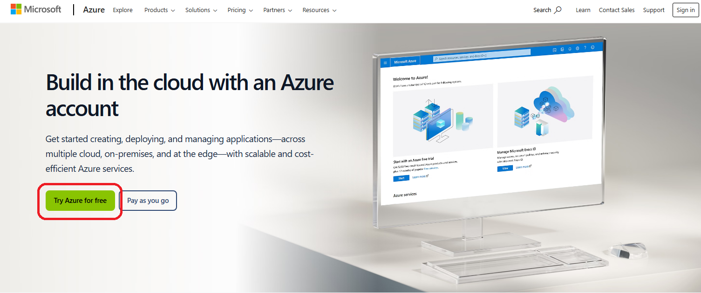
Once you create an account and get the subscription with the Azure credits, the home page of the Azure portal should look similar to the following.
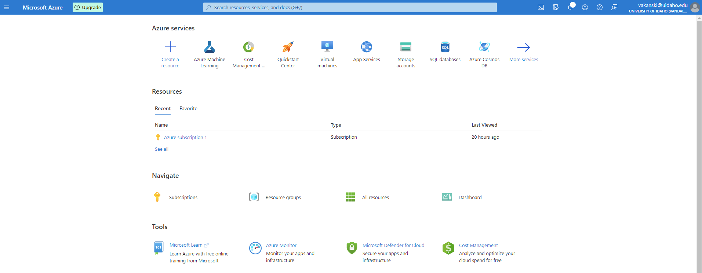
9.3 No-Code Azure ML
In this section we will train and deploy a classification model without writing any code, by using the graphical interface of Azure ML Studio and its Automated ML tool.
9.3.1 Creating a Workspace Resource
From the home page of the Azure portal, we first need to create a new Resource that will indicate what type of tools and services we will be using.
- Select
+ Create a resource.
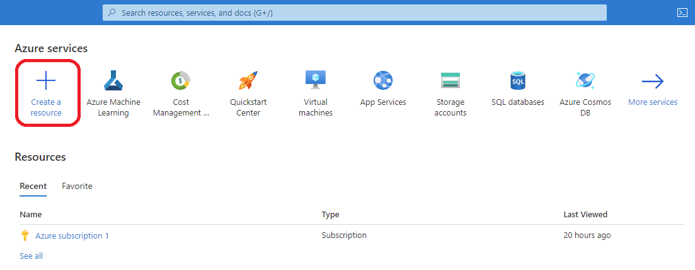
Azure will next display many popular services and resources.
- In the search box write
Azure Machine Learningand select it.
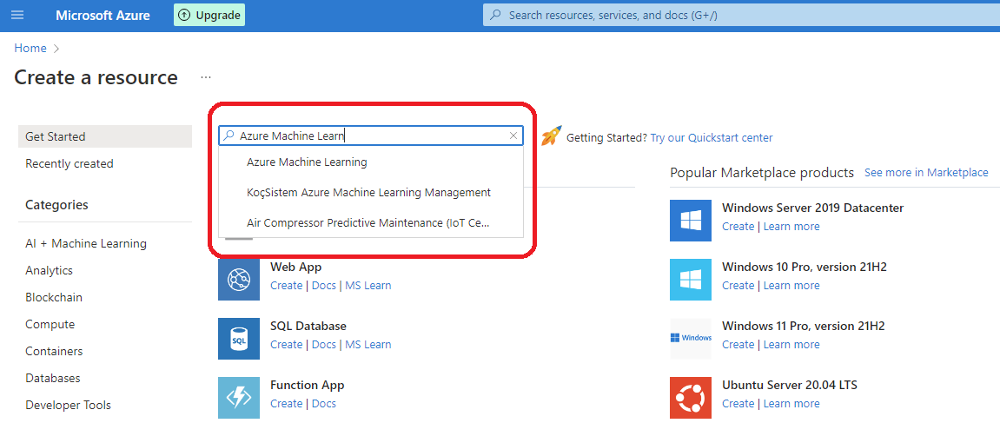
This will load the web page of Azure Machine Learning.
- Select
Create.
It will open a new page for creating an Azure Machine Learning workspace resource. The Workspace provides a place to work with machine learning models, and allows access to tools for training and deploying models. For instance, the Workspace will store information about training runs, such as logs of various metrics, and it will provide access to the data and scripts. Note also that when we are done using Azure resources such as workspaces, we need to delete the resources, otherwise some costs can be incurred (e.g., even if we don’t use the workspace to run a model, Azure may charge a fee for storing the data).
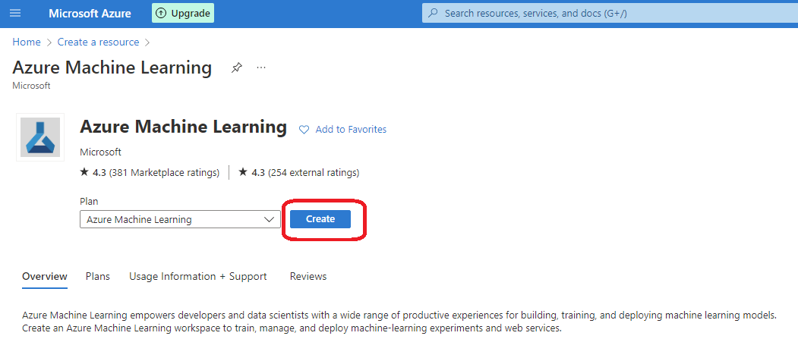
When we create a new Workspace, we need to fill in the information shown in the screenshot below.
- Subscription: Azure subscription, e.g., the Azure credits obtained with the free trial or the student program.
- Resource group: Assign a name for the resource group, or click on
Create newto create a resource group. A resource group is a container that holds related resources, which makes it easy to delete all of them at once at the end. - Workspace name: Assign a name for the workspace (e.g., perhaps a name that is related to the project).
- Region: Select the geographical region (e.g.,
West US 2). - Storage account: A new storage account will be created for the workspace for storing the data.
- Key vault: A new key vault will be created for the workspace for storing sensitive information.
- Application insights: A new application insights resource will be created for the workspace to store information about deployed models.
- Container registry: Leave it as None (it will be created automatically the first time the model is deployed).
After the information in all fields is entered, select Review + create.
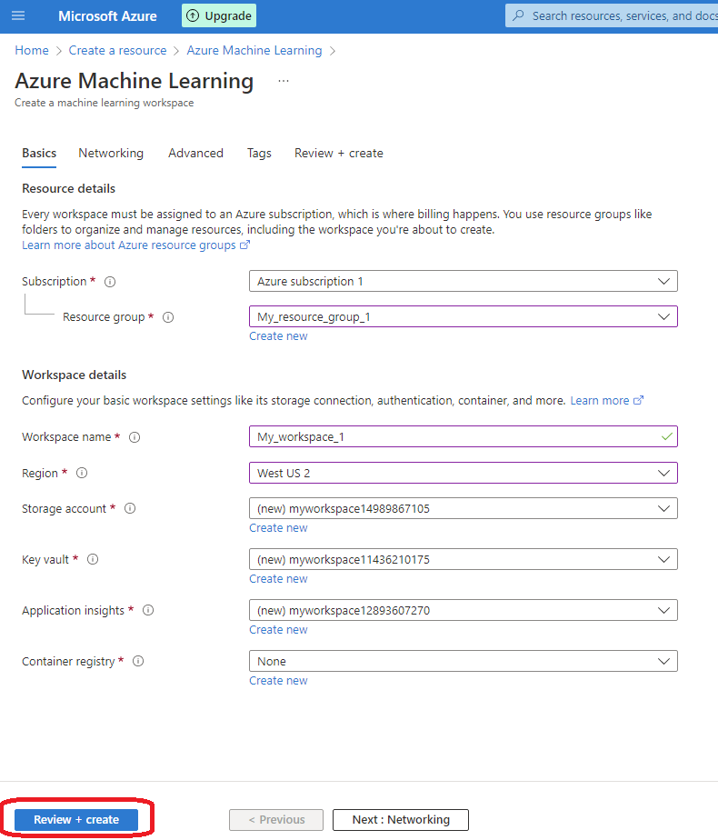
The next page will show the information that we entered and we will need to confirm that everything is correct.
- Select
Create.
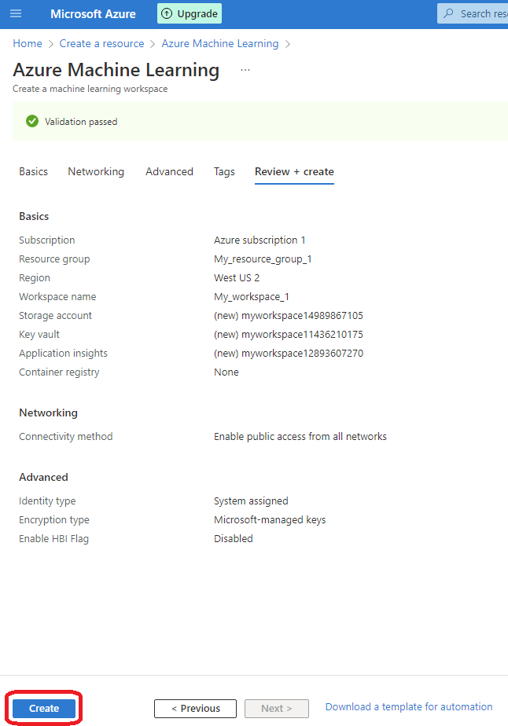
It may take a few minutes for the Workspace to be created. Once it is ready, the page will show that the deployment is complete.
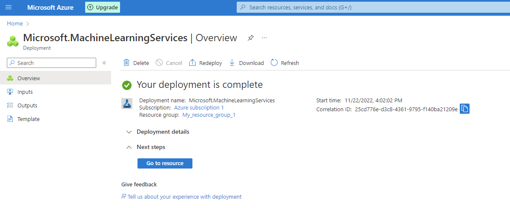
9.3.2 Using Azure ML Studio
As we mentioned in the introductory section, Azure Machine Learning Studio is the web portal for data engineering, model training, and deployment.
- Click on the following link to navigate to Azure ML Studio, or click
Launch studioon the page of the workspace in the Azure portal.
The interface of Azure ML Studio is shown below. On the top of the page, our workspaces should be listed under All workspaces. In this case, the workspace that we just created and named My_workspace_1 is shown.
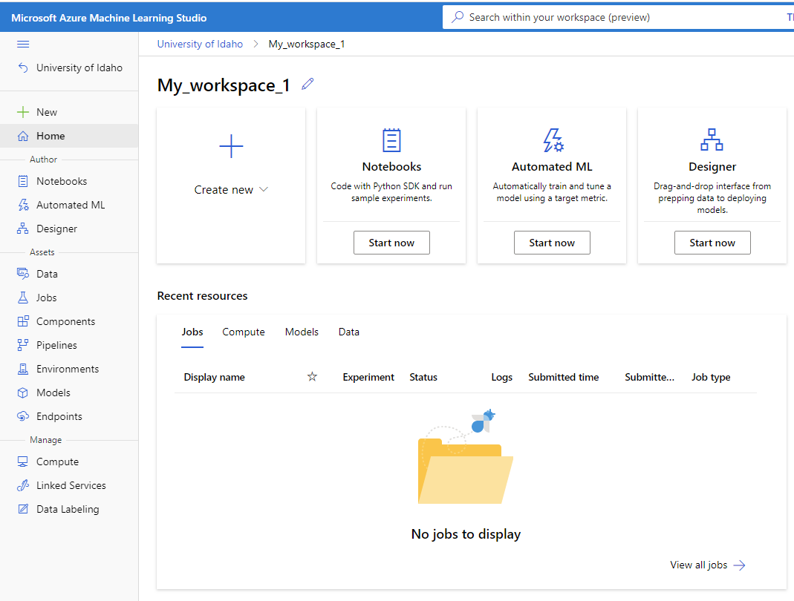
The various modules that are available in Azure ML Studio are listed in the left-side menu. To see the names of the modules, click on the three horizontal lines in the upper left corner. A brief description of the modules is shown in the next figure. The modules allow us to conveniently apply tools for managing the different phases of data science projects from a single place.
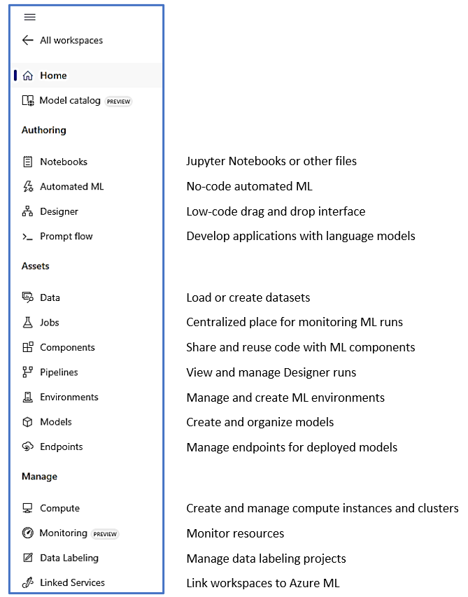
9.3.3 Loading the Dataset
For demonstration purposes, we will use the Heart Failure Dataset, which contains 13 columns with information about 299 patients who may or may not be at risk of heart failure. The .csv file with the records is available in the data folder with the other files for this tutorial.
- Click on the
Datamodule in the left-side menu in Azure ML Studio (see figure below).
The Data section provides various tools for data management, and it allows us to upload files or folders with data from a local machine, or provide links to web files (e.g., data from GitHub or Google Drive), load data from a list of open datasets collected by Microsoft (check Azure Open Datasets), or use files from a datastore. Datastores allow organizations that have many data files in different locations in Azure to link them together and organize them in a single view.
- Select
+ Createto load the dataset.
Azure ML Studio will guide us through several steps for creating the data asset.
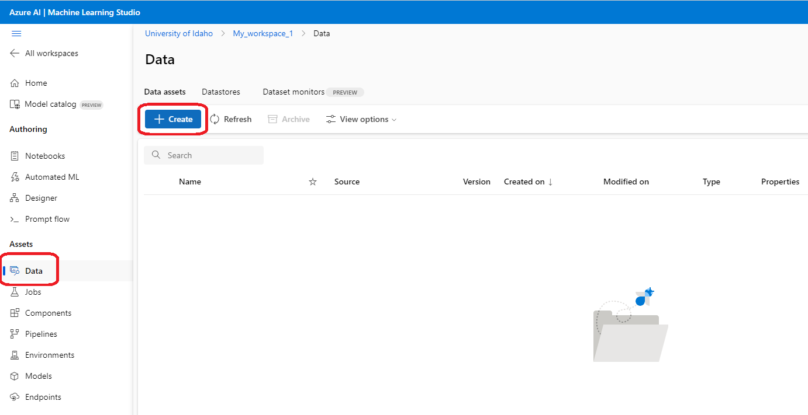
On the first page, we will need to enter a name for the dataset, a brief description, and also indicate the type of the data asset, which is Tabular for a .csv file. After the information is entered, select Next.
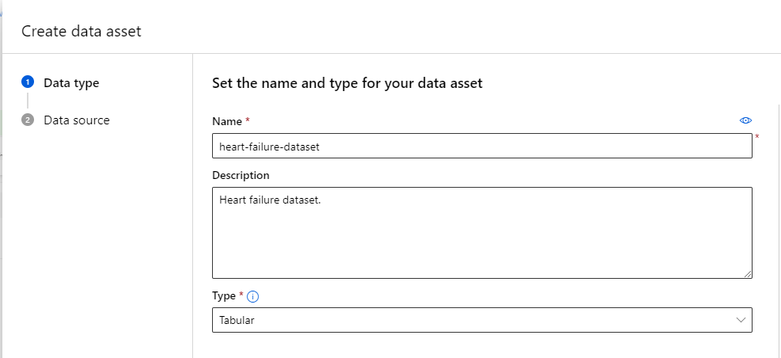
Afterward, we will indicate that the dataset is saved on our computer and we will upload the dataset From local files.
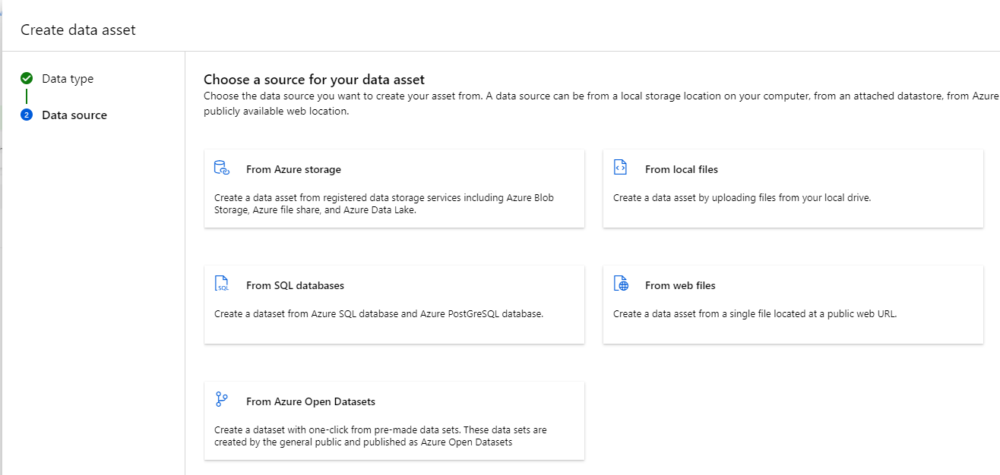
Select Next to accept the default datastore for storing the file, and get to the step where from the dropdown menu we select Upload - Upload files and navigate to the directory where the .csv file containing the heart failure records is saved.
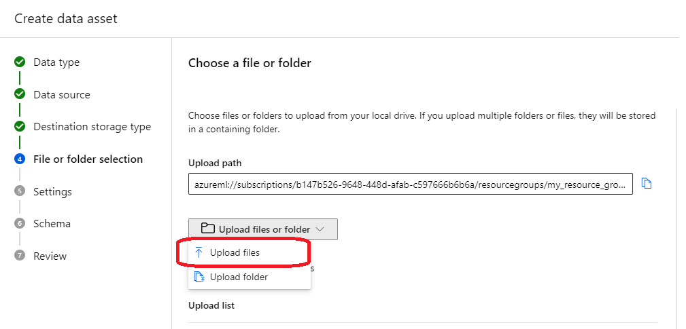
The next page will show the columns in the dataset. Select Next to go to the next page.
In the Schema page, we will change the data type to Boolean for the columns anaemia, diabetes, high_blood_pressure, sex, smoking, and DEATH_EVENT.
Afterward, click Next and select Create to complete the creation of the data asset.
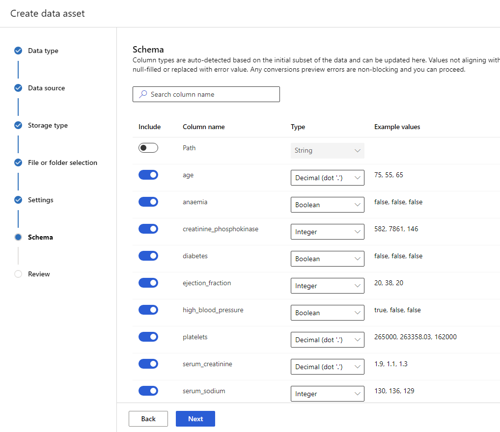
Now we can see that the dataset heart-failure-dataset is listed under the Data assets in our workspace.
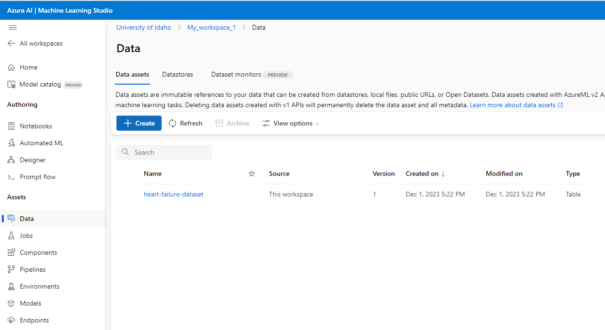
9.3.4 Creating a Compute Resource
We also need to use Compute Resources for our project to perform data preparation and processing, and to run the models. To create a compute resource, we will select Compute from the left-side menu.
We can see that the compute resources are categorized into several tabs:
- Compute instances, are workstations for data and models; they involve creating a Virtual Machine (VM) and launching a notebook instance (e.g., compute resources to train a model are requested from the notebook).
- Compute clusters, VMs for on-demand code processing (e.g., training a model using AutoML); clusters can automatically scale down to zero nodes when they are idle, so that they do not incur costs.
- Kubernetes clusters, VMs that are orchestrated by Kubernetes.
- Attached computes, links to existing Azure compute resources, such as Virtual Machines or Azure Databricks clusters.
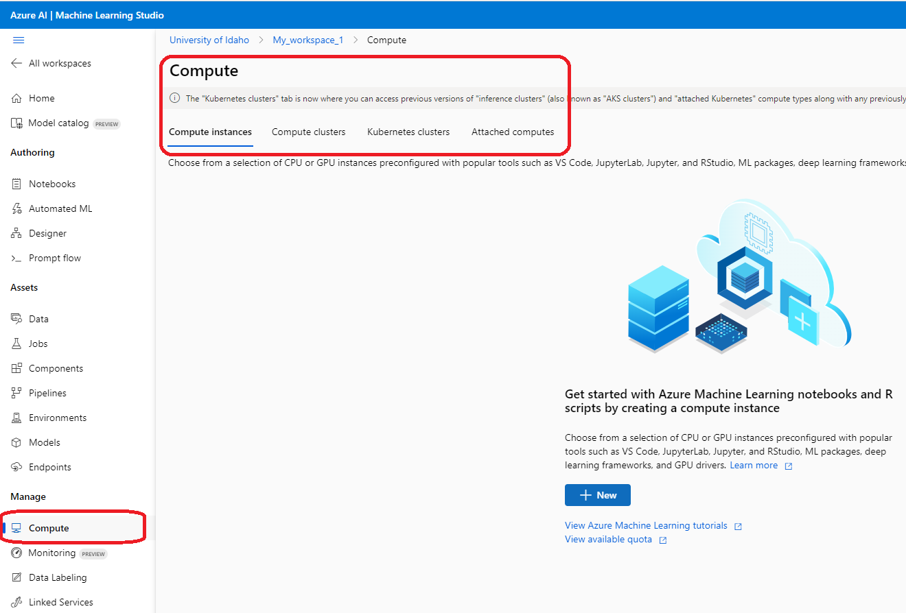
For this task, we can use either a compute instance or a compute cluster, so let’s select the Compute instances tab.
- Click on the
+ Newbutton to create a new compute resource. - Let’s assign the name
heart-failure-computefor the resource (see the figure below).
Selecting adequate compute resources for a project depends on several factors, which impose trade-offs between speed and cost.
- CPU versus GPU: CPUs are less expensive, but also less powerful, especially for training deep learning models. GPUs are more expensive, but they provide efficient parallel computing, and are often necessary for training deep learning models.
- Cluster size: larger clusters are more expensive, but faster in completing tasks. For smaller tasks that don’t take too long, it may be better to select a small compute cluster.
- VM size: similar to the cluster size, increasing the amount of RAM, number of cores, and processing speed of the VMs will reduce the computational time, but it will be more expensive.
- Dedicated versus low-priority resources: dedicated resources are non-interruptible, while low-priority instances can be reassigned by Azure to other tasks, which can interrupt the job.
For this project, we will select a VM with a CPU, and from the listed VMs we can select a small general-purpose or memory-optimized VM, which costs a fraction of a dollar per hour. The exact prices are listed next to each VM size.
There are several optional steps that we can skip, and click on Review + Create to create the compute instance. It is recommended to enable the option to automatically shut down the compute instance after a period of inactivity, so that it does not incur costs while it is not used.
It can take a few minutes for the compute resource to be created.
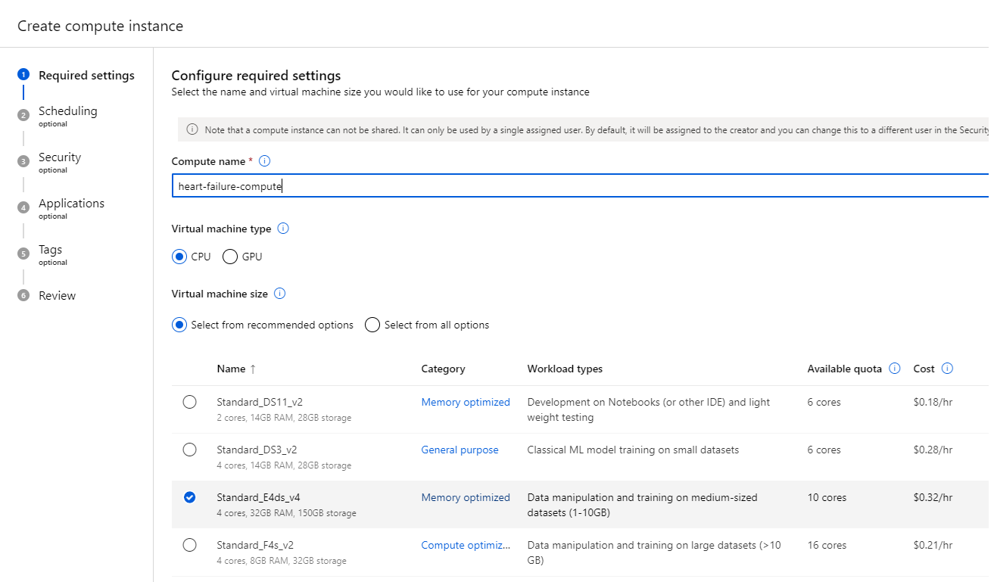
9.3.5 Training a Model with Automated ML
Automated ML (AutoML) in Azure ML Studio allows us to build and deploy ML models without writing code. AutoML automatically tries many combinations of preprocessing steps, algorithms, and hyperparameters, and ranks the resulting models by a selected metric.
- Select
Automated MLfrom the modules in the left-side panel. - Select
+ New Automated ML job.
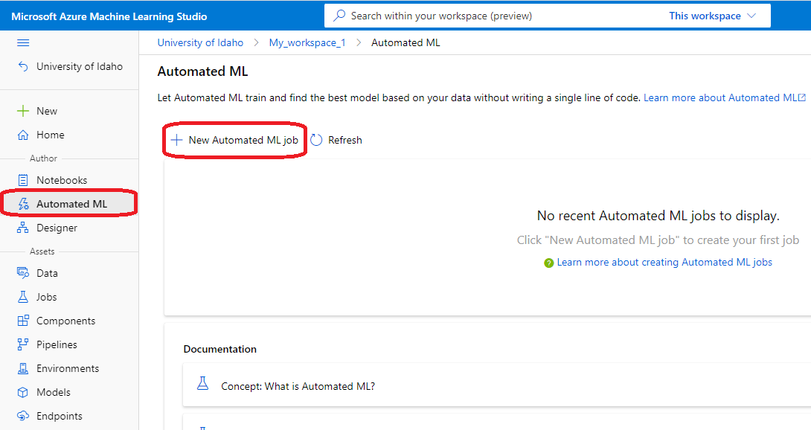
- The first step requires assigning a name for the experiment. Let’s simply name it
Heart_failure_experiment.
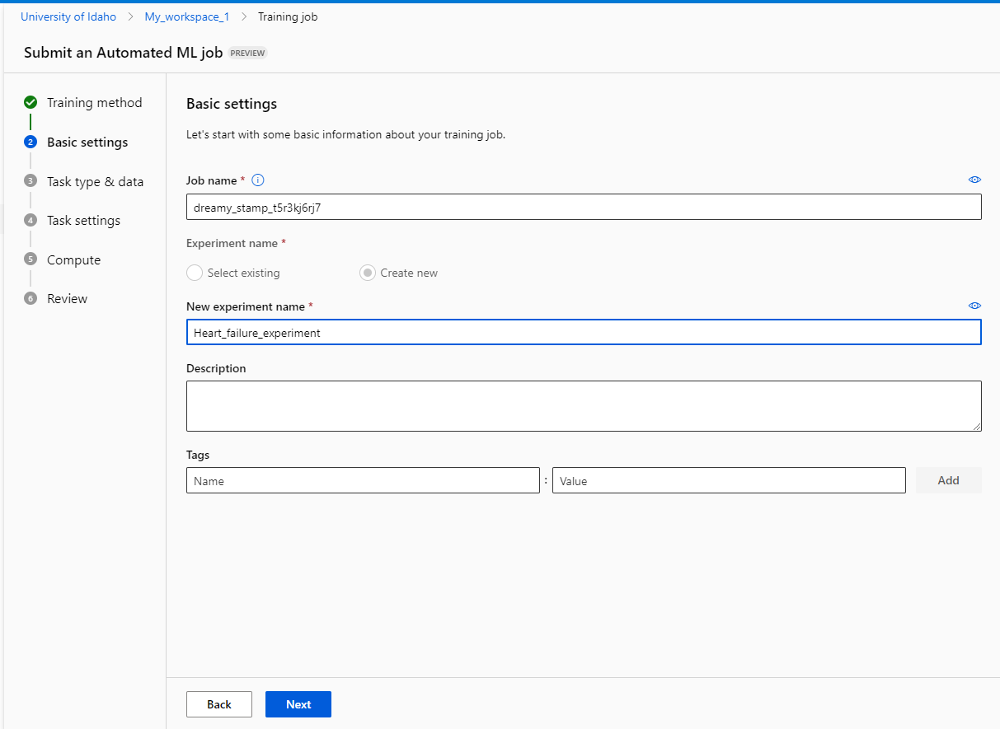
- Afterward, we need to indicate the task, that is, whether the goal is to perform classification, regression, time-series forecasting, etc. In this case, we select
Classification. - For the dataset, we will select the
heart-failure-datasetthat we uploaded.
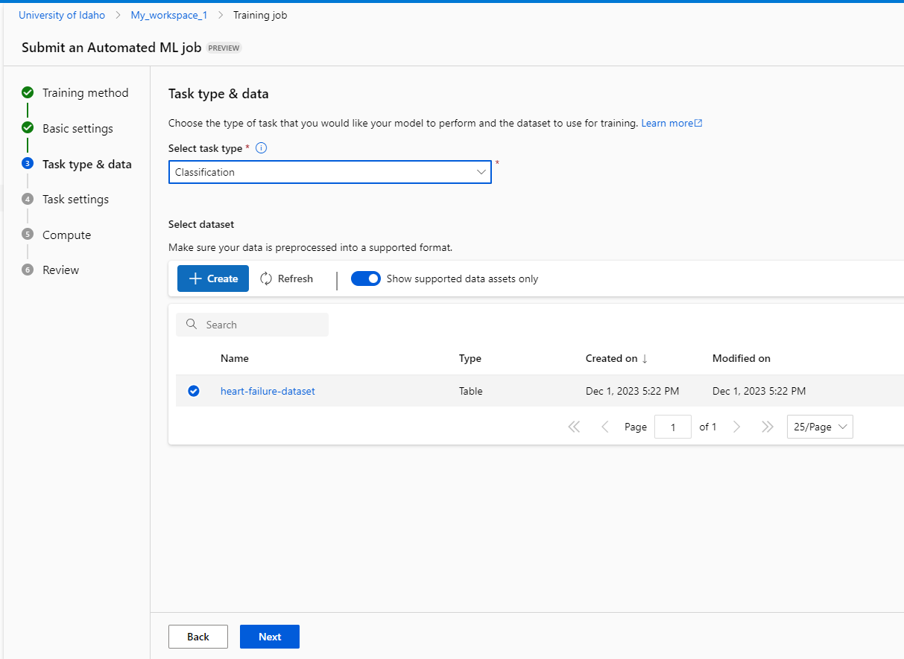
- Next, select the target column in the data: in this case it is
DEATH_EVENT. - We can also specify the validation type, e.g., whether we would like to use k-fold cross-validation, or whether to split the training data into train and validation sets. Also, the test data asset field allows us to upload a test dataset or specify how to evaluate the model. We can leave these fields at their defaults.
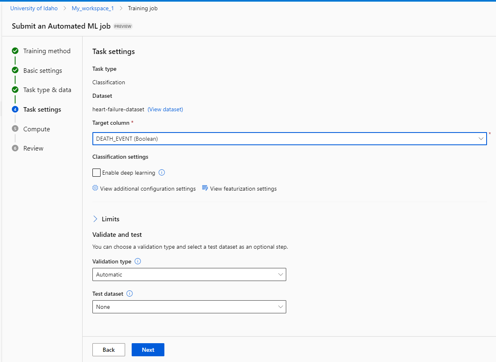
- Finally, use the drop-down menu to assign a compute resource, e.g., select the
heart-failure-computethat we created. - Review the AutoML job and submit it.
Now that the setup is complete, the experiment will begin running. This means that Azure ML will train many different models, and explore different hyperparameters for the models.
On the home page, under the Jobs section, we will see a summary of the entered information about the experiment, and we will also see that the status of the experiment is Running. It took about 1 hour to complete this experiment with the default settings. The maximum duration of the job, and the number of concurrent trials, can be reduced in the Limits settings of the job to save time and credits.
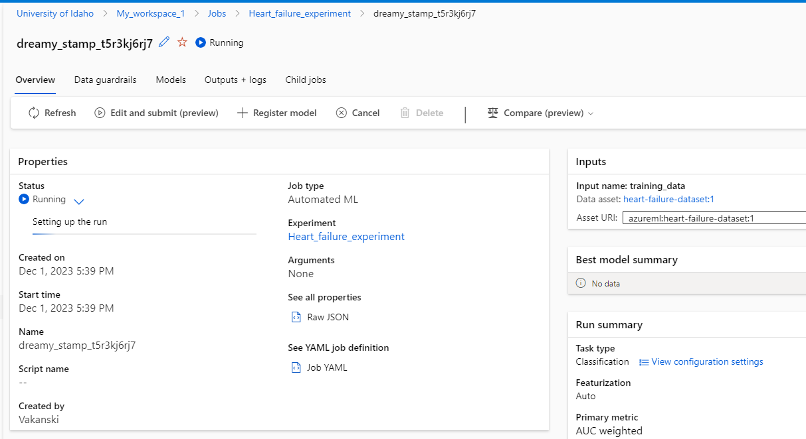
When the experiment is completed, in the Best model summary we can see that the highest performance was obtained by a Voting Ensemble model, which achieved 91.5% AUC.
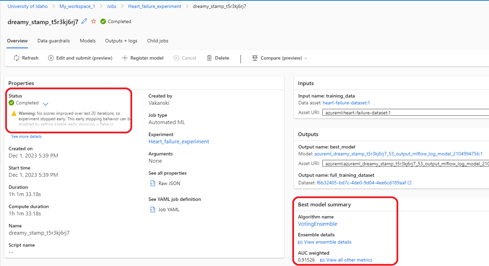
Also, let’s select the Models + child jobs tab to get more information about the training. We can see that over 50 models were trained in total, including LightGBM, XGBoost, Random Forest, and Gradient Boosting, and running most of the models took under 1 minute. We can also see that different scaling methods were used with different algorithms (MinMaxScaler, RobustScaler, StandardScaler).
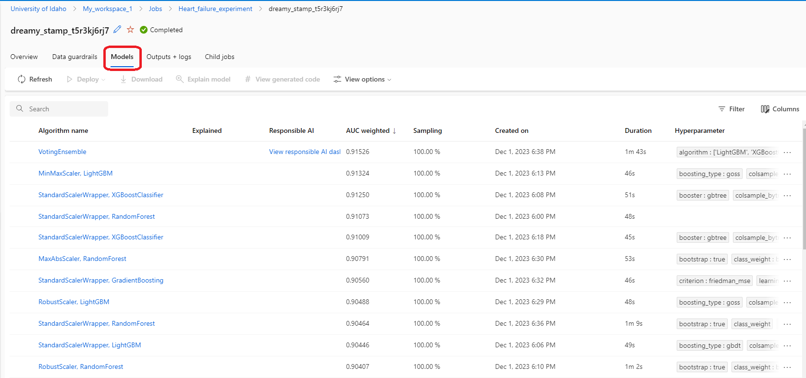
9.3.6 Deploying the Model
To deploy a trained model as a web service, we will select the Voting Ensemble as the best model, and from the drop-down menu under the Deploy button select Real-time endpoint. (In earlier versions of Azure ML Studio, shown in the screenshot below, the option was named Web service.)
A real-time endpoint is a web service with an HTTPS address (URL), which receives input data in a request, runs the model on it, and returns the predictions in the response. Azure ML packages the model, its dependencies, and a scoring script into a container, and hosts the container on the selected compute.
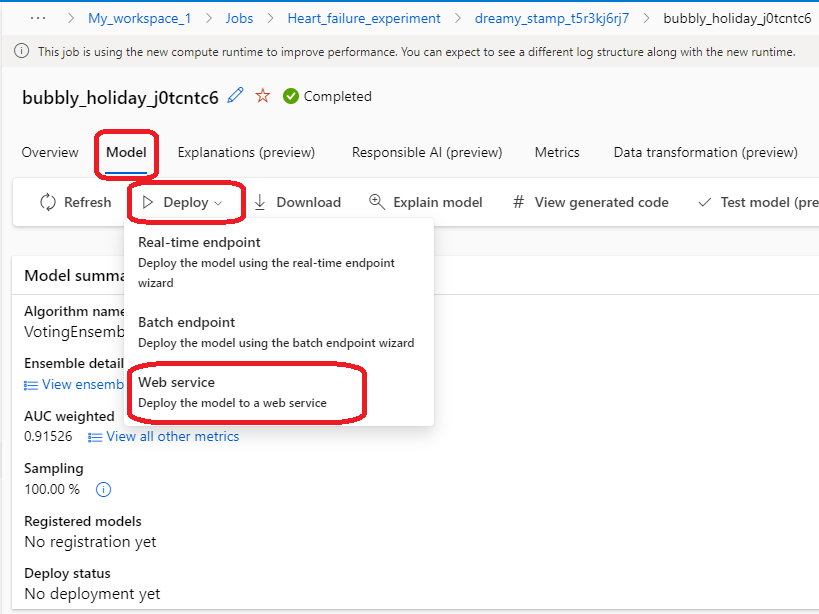
In the newly opened form, we need to assign a name for the endpoint, a brief description, and the compute (virtual machine size and the number of instances) for the deployed model. For this project, a small CPU instance (e.g., Standard_DS3_v2) with 1 instance is sufficient, since the model is small and we do not expect many requests. Deploying models that require large computational resources can require using other compute types with GPUs, larger RAM memory, or a larger number of cores.
Next, let’s click on Deploy to initialize this step. It took about 15 minutes for the model to be deployed. When it is completed, the Provisioning state of the endpoint will change from Updating to Succeeded.
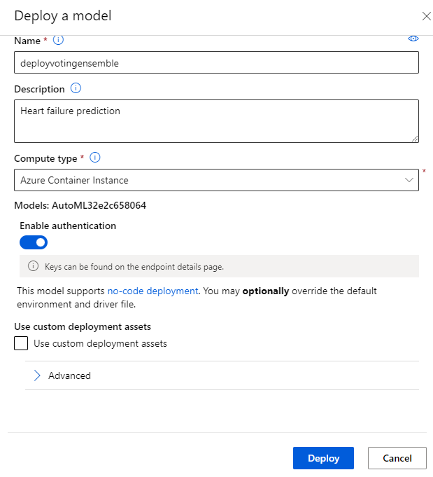
9.3.7 Consuming the Model
After the model is deployed, we can find the summarized information in the Endpoints module in the left-hand menu.
- Select the
Consumetab to access the script for consuming the model.
The Consume page will provide the REST endpoint for the users’ consumption, the primary and secondary API keys for authentication, and a script for consuming the model from a local machine. The script is available in Python, C#, and R.
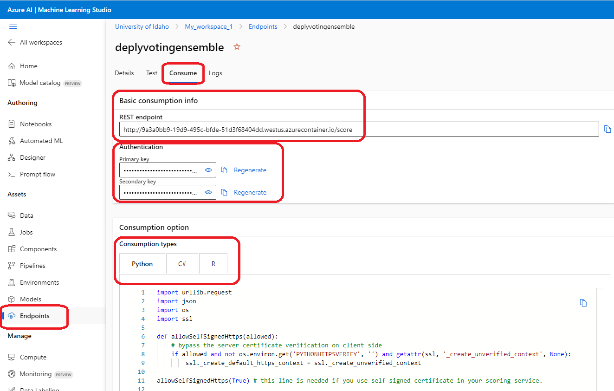
The Python script generated by Azure ML Studio is shown below (the exact format of the data dictionary depends on the deployed model, therefore always copy the script from the Consume tab of your endpoint). The data section is a dictionary where the users enter the values of the input features; in this script, all values are set to either 0 or False. The url in the code is the address of the REST endpoint from the above figure, and api_key is the primary authentication key that is listed in the above figure as well. The last code section sends the request to the endpoint and prints the predicted DEATH_EVENT.
# Note: the codes in this tutorial are not required for quizzes or assignments
import urllib.request
import json
import os
import ssl
def allowSelfSignedHttps(allowed):
# bypass the server certificate verification on client side
if allowed and not os.environ.get('PYTHONHTTPSVERIFY', '') and getattr(ssl, '_create_unverified_context', None):
ssl._create_default_https_context = ssl._create_unverified_context
allowSelfSignedHttps(True) # this line is needed if you use self-signed certificate in your scoring service.
# Request data goes here
# The example below assumes JSON formatting which may be updated
# depending on the format your endpoint expects.
data = {
"Inputs": {
"data": [
{
"age": 0.0,
"anaemia": False,
"creatinine_phosphokinase": 0,
"diabetes": False,
"ejection_fraction": 0,
"high_blood_pressure": False,
"platelets": 0.0,
"serum_creatinine": 0.0,
"serum_sodium": 0,
"sex": False,
"smoking": False,
"time": 0
}
]
},
"GlobalParameters": {
"method": "predict"
}
}
body = str.encode(json.dumps(data))
# Copy the REST endpoint and the primary key from the Consume tab
url = 'https://<your-endpoint-name>.<region>.inference.ml.azure.com/score'
api_key = '<your-primary-key>'
headers = {'Content-Type': 'application/json', 'Authorization': ('Bearer ' + api_key)}
req = urllib.request.Request(url, body, headers)
try:
response = urllib.request.urlopen(req)
result = response.read()
print(result)
except urllib.error.HTTPError as error:
print("The request failed with status code: " + str(error.code))
# Print the headers - they include the request ID and the timestamp, which are useful for debugging the failure
print(error.info())
print(error.read().decode("utf8", 'ignore'))To consume the model, we just need to save the script to our local machine (a copy is provided in the codes folder for this tutorial) and execute it. The output is shown below. For this set of input parameters, the result for DEATH_EVENT is True.
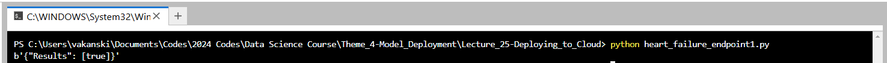
Let’s check the model prediction for the last record in the dataset. The input features are shown below.
"age": 50.0,
"anaemia": False,
"creatinine_phosphokinase": 196,
"diabetes": False,
"ejection_fraction": 45,
"high_blood_pressure": False,
"platelets": 395000.0,
"serum_creatinine": 1.6,
"serum_sodium": 136,
"sex": True,
"smoking": True,
"time": 285The prediction by the model is False, as expected.
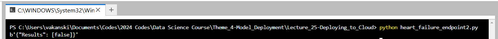
The same request can be sent from any programming language or application that can make HTTP requests, which is what makes the deployed model available to end users: for instance, a web application created with Flask or FastAPI (Lecture 16) can call this endpoint to obtain predictions.
9.4 Code-based Azure ML
In this section, we will use Azure ML Studio to manage Data Science projects in a Python environment, which can include JupyterLab, Jupyter Notebooks, or VS Code. Differently from the previous section, which focused on the no-code environment of Azure ML Studio, this section focuses on the code-based environment.
We will learn how to use Azure ML to train our own custom model. For this purpose, we will define a deep learning model for classification of the MNIST dataset, and we will train and evaluate the model using Azure ML resources. Afterward, we will register the model in the workspace, and load the registered model to make predictions.
If we didn’t have access to GPUs from other sources, we could use the GPUs provided by Azure ML to train our models.
The code in this section uses the current version of the Azure ML Python SDK (azure-ai-ml, also referred to as SDK v2) together with MLflow. The earlier SDK v1 (azureml-core), which was used in older tutorials and examples on the web, has been retired.
9.4.1 Creating Workspace and Compute Resource
Let’s log in to the Azure portal and create a new workspace named Workspace_2, by following the steps listed in Section 9.3.1 (alternatively, the workspace from Section 9.3 can be reused).
Afterward, we will navigate to the Azure ML Studio webpage, and in the newly created Workspace_2, we will create a new compute resource from the Compute module in the left-side menu. Similar to the previous section, we will select the Compute instances tab and click on + New. For this task, we can use a CPU VM since MNIST is a relatively small dataset. If we were to work with larger datasets and models, we would need to select a GPU VM.
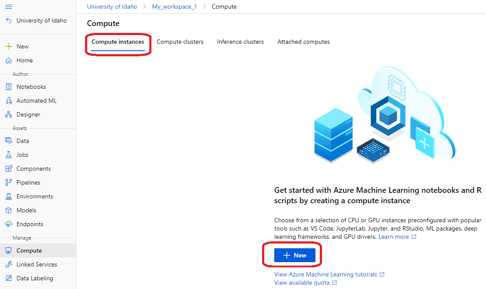
9.4.2 Using Jupyter Notebooks in Azure ML
The created compute instance will be listed on our homepage. Note that in the Applications tab, the listed applications include JupyterLab, Jupyter, VS Code (Desktop), and VS Code (Web). We can use these applications to work with Jupyter Notebook files in the same way as we do outside of Azure ML Studio.
Let’s select JupyterLab from the Applications tab for the newly created compute instance.
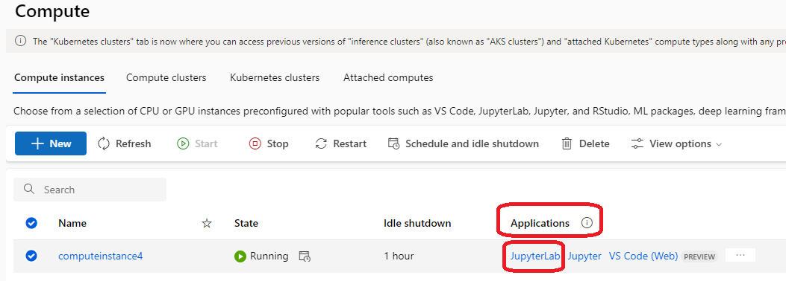
9.4.3 Loading the Data and Defining the Model
In the opened JupyterLab environment, let’s create a new notebook for training the model using the Python 3.10 - SDK v2 kernel, which comes with the Azure ML SDK, MLflow, TensorFlow, and PyTorch preinstalled.
Let’s rename the notebook to mnist-demo. A copy of the complete notebook is provided in the codes folder for this tutorial.
The code in the next cells is familiar, and it simply imports libraries and loads the MNIST dataset.
# Import libraries
import tensorflow as tf
from tensorflow import keras
from keras.datasets import mnist
from keras.models import Model
from keras.layers import Input, Dense, Dropout, Flatten, Conv2D, MaxPooling2D
import numpy as np
import matplotlib.pyplot as plt# Load the data
(X_train, y_train), (X_test, y_test) = mnist.load_data()
# Scale the pixel values to [0, 1] and add a channel dimension
X_train = X_train[..., np.newaxis] / 255.0
X_test = X_test[..., np.newaxis] / 255.0
print('Data shape:', X_train.shape)We will use the TensorFlow-Keras library to define a simple Convolutional Neural Network for MNIST classification (see Lecture 13).
# Define the layers in the model
inputs = Input(shape=(28, 28, 1))
conv1a = Conv2D(filters=32, kernel_size=3, padding='same', activation='relu')(inputs)
conv1b = Conv2D(filters=64, kernel_size=3, padding='same', activation='relu')(conv1a)
pool1 = MaxPooling2D()(conv1b)
flat = Flatten()(pool1)
dense1 = Dense(1024, activation='relu')(flat)
dropout1 = Dropout(0.5)(dense1)
outputs = Dense(10, activation='softmax')(dropout1)
# Define the model with inputs and outputs
model = Model(inputs, outputs)# Compile the model
model.compile(optimizer="adam", loss='sparse_categorical_crossentropy', metrics=["accuracy"])9.4.4 Tracking the Training with MLflow
Next, we will connect to the Azure ML workspace from the notebook. The MLClient class from the Azure ML SDK is the entry point for managing the resources of a workspace, and it requires the subscription ID, the resource group, and the workspace name. These values can be found by clicking on the workspace name in the upper right corner of Azure ML Studio. The DefaultAzureCredential class automatically uses the identity of the user who is signed in to the compute instance.
from azure.ai.ml import MLClient
from azure.identity import DefaultAzureCredential
SUBSCRIPTION = "...enter your 32-digit subscription ID here..."
GROUP = "My_resource_group_1"
WORKSPACE = "Workspace_2"
# Create a client for the workspace using the subscription information
ml_client = MLClient(
credential=DefaultAzureCredential(),
subscription_id=SUBSCRIPTION,
resource_group_name=GROUP,
workspace_name=WORKSPACE,
)Azure ML has built-in integration with the MLflow framework for managing and tracking ML experiments. Every Azure ML workspace has an MLflow tracking server, whose address is obtained from the workspace properties.
In the next cell, we point MLflow to the workspace, create an experiment named demo-mnist-training, and use the autolog() function to automatically log the loss, accuracy, and other parameters of the training progress for the TensorFlow model. The experiment and the logged metrics appear in the Jobs module of Azure ML Studio.
import mlflow
# Track the experiment in the Azure ML workspace
mlflow_tracking_uri = ml_client.workspaces.get(WORKSPACE).mlflow_tracking_uri
mlflow.set_tracking_uri(mlflow_tracking_uri)
mlflow.set_experiment("demo-mnist-training")
# Automatically log the training progress
mlflow.tensorflow.autolog()Next, we train the model for 5 epochs inside an MLflow run, and we can see that it achieved close to 99% train accuracy. When the with block ends, the run is closed automatically, and the logged metrics and the trained model are stored in the workspace.
# Train the model
with mlflow.start_run() as run:
model.fit(X_train, y_train, epochs=5)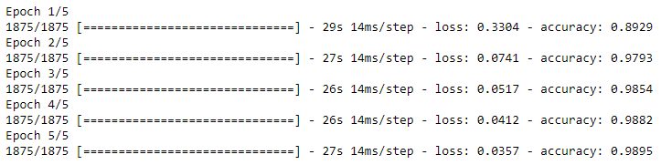
9.4.5 Registering and Consuming the Model
To make the model available for inference in the future, we will register it with Azure ML. Since autolog() already saved the model as an artifact of the run, registering it only requires pointing to the run and assigning a name. This will save the model under the name mnist-tf-model in the model registry of the workspace. The registered model can be accessed from the Models section under Assets in the left-side panel in Azure ML Studio, and each new registration of the same name creates a new version.
# Register the model from the MLflow run
registered_model = mlflow.register_model(
model_uri=f"runs:/{run.info.run_id}/model",
name="mnist-tf-model",
)
print("Registered model version:", registered_model.version)Afterward, we will load the registered model from the registry by its name and version, and use it to evaluate the test set and predict the classes for several images.
# Load the registered model
loaded_model = mlflow.tensorflow.load_model(f"models:/mnist-tf-model/{registered_model.version}")# Evaluate the model
loaded_model.evaluate(X_test, y_test, verbose=0)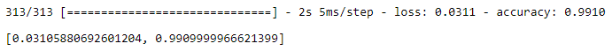
# Show images and labels
def show_images(images, labels):
fig, axes = plt.subplots(1, len(images), figsize=(1.5 * len(images), 2))
for ax, image, label in zip(axes, images, labels):
ax.imshow(image.squeeze(), cmap='gray')
ax.set_title(label)
ax.axis('off')
plt.show()
# Predict the labels for several images
preds = loaded_model.predict(X_test[:10]).argmax(axis=1)
show_images(X_test[:10], preds[:10])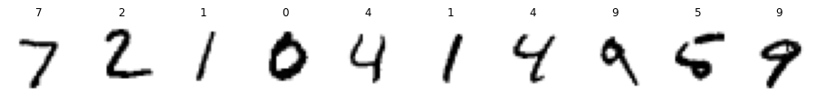
A registered model can be deployed to a real-time endpoint in the same way as the AutoML model in Section 9.3.6: select the model in the Models module, click Deploy, and choose Real-time endpoint. Azure ML generates the scoring script and the environment automatically for models that are logged with MLflow. The endpoint can then be consumed with the script from the Consume tab, as in Section 9.3.7.
9.5 Cleaning Up the Resources
As we mentioned earlier, always remember to release the used compute resources after training or predicting with a model, since running compute instances and deployed endpoints are billed by the hour, even when they are idle. One alternative is to Stop the current compute instance if we would like to reuse it later, or Delete the resources if they are not needed for future use.
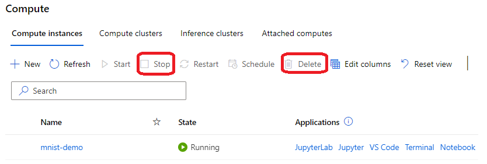
In addition:
- Delete the deployed endpoints from the
Endpointsmodule when they are no longer needed. - To remove everything at once, delete the resource group in the Azure portal. This deletes the workspace together with its storage account, key vault, container registry, compute resources, and endpoints.
- The
Cost Management + Billingpage in the Azure portal shows the remaining credit and the costs incurred by each resource, and it allows setting up budget alerts.
References
- Microsoft course - Data Science for Beginners, available at https://github.com/microsoft/Data-Science-For-Beginners.
- Azure Machine Learning documentation. Microsoft Learn. https://learn.microsoft.com/en-us/azure/machine-learning/.
- Track ML experiments and models with MLflow. Microsoft Learn. https://learn.microsoft.com/en-us/azure/machine-learning/how-to-use-mlflow-cli-runs.
- From No-Code to Code in Azure Machine Learning, by William VanBuskirk, available at: https://levelup.gitconnected.com/from-no-code-to-code-in-azure-machine-learning-38ee6b556de2.
- Creating a TensorFlow Model with Python and Azure ML Studio, by Jarek Szczegielniak, available at https://www.codeproject.com/Articles/5321728/Python-Machine-Learning-on-Azure-Part-3-Creating-a.